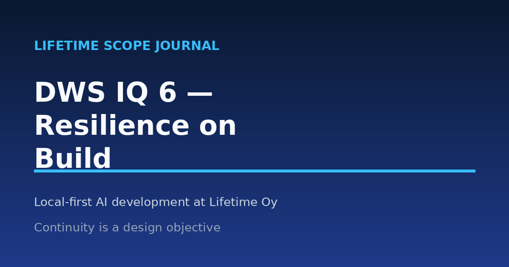

DWS IQ 6 — Kontinuität im Build
20.08.2026 · Risto Päärni · Espoo, Finnland

Der Kern
Wenn ein gesamter Entwicklungsworkflow in dem Moment stoppt, in dem ein AI-Anbieter die Richtung ändert, ist das kein belastbarer Stack. Es ist eine Abhängigkeit.
Modelle ändern sich jeden Monat. Preise ändern sich. Richtlinien ändern sich. Das Produkt muss trotz allem weiter gebaut werden.
Bei Lifetime Oy haben wir Kontinuität zum Designziel gemacht.
Drei Entscheidungen tragen das:
- Lokale Open-Source-Modelle sind der Standard für die tägliche Entwicklung. Das Fundament bleibt im Gebäude.
- Frontier-Modelle kommen auf Einladung. Wenn eine Aufgabe für das lokale Modell zu schwierig ist, übernimmt das Frontier-Modell die schwere Arbeit und gibt sie zurück.
- Die Standards reisen mit der Arbeit, nicht mit dem Anbieter. Unser Truth Standard, die DWS-Ontologie und die Domänen-Wörterbücher schützen die Nachvollziehbarkeit und halten unbelegte Behauptungen und AI-Aufblähung aus der Codebasis fern, unabhängig davon, welches Modell den Code geschrieben hat.
Ich behaupte nicht, dass uns das anbieterunabhängig macht. Kontinuität ist das Ziel, und wie nah du dran bist, findest du nur heraus, indem du eine Frage ehrlich beantwortest:
Wenn dein primärer AI-Anbieter morgen Preise oder Richtlinien änderte, wie viel von deinem Entwicklungsworkflow würde weiterlaufen?
Die Geschichte
Der Juni 2026 war mein bester Monat mit dem Bauen mit Claude. Seit Oktober 2025 haben das Lernen, mit AI zu programmieren, und der Aufbau des Firehorse-Produktionsmodells Tempo gebracht und in einem Jahr 116 Produkte geschaffen — nicht zu vergessen die ersten Monate mit Cursor.AI und Visual Studio Code, als der Code noch von einem Menschen im Loop vorbereitet wurde. Insgesamt hat mich das Wachstum von Claude Code als verbundenes Werkzeug in den letzten 10 Monaten 10x stärker gemacht. Danke an Anthropic, das Cursor-Team, Microsoft und GitHub.
Heute liegt der Fokus darauf, so viel Arbeitslast wie möglich zuerst auf lokale Modelle zu verlagern: 1) um souveräne AI-Entwicklung, Modelle, Harnessing und so weiter zu lernen; 2) um unabhängig von den Frontier-Modellen zu sein und ein wenig Geld zu sparen (noch nicht sichtbar).
In meinem Unternehmen Lifetime Oy bauen wir täglich mit lokalen Open-Source-Modellen. Heute sitzt Claude in heißer Bereitschaft: Wenn eine Aufgabe für das lokale Modell zu schwierig wird, kommt das Frontier-Modell herein, erledigt die schwere Arbeit und gibt die Arbeit zurück. Das Fundament bleibt im Gebäude. Zweitens ist GitHub Copilot, das meine Commits einfallsreich aktualisiert, die neuesten in den Paketen gefundenen Probleme behebt und ein wirklich wertvolles Werkzeug für die Verwaltung mehrerer Git-Repositories und Kundeninstallationsversionen ist.
Die Kartoffeln
Modelle ändern sich jeden Monat. Preise ändern sich. Richtlinien ändern sich. Das Produkt muss trotzdem weiter gebaut werden.
Deshalb habe ich ein Dutzend DWS-Standards geschrieben, um die Arbeit zu schützen. Der Truth Standard hält unbelegte Behauptungen fern. Die DWS-Ontologie hält die Struktur ehrlich. Domänen-Wörterbücher halten jeden Wissensbereich präzise. Zusammen geben sie Nachvollziehbarkeit und stoppen die AI-Aufblähung, bevor sie sich ausbreitet.
Souveräne AI in der Praxis ist Disziplin darüber, was wo läuft: Lokale Open-Source-Modelle tragen die tägliche Arbeit, und du steigst nur dann auf ein Frontier-Modell um, wenn es die Korrektur verlangt.
So sieht das im August 2026 auf meinem Schreibtisch aus. Wenn du Hilfe beim Aufbau lokaler modellbasierter Entwicklung brauchst — DM. Ich bin hier, um zu helfen.
Mein Schreibtisch & Workflow — August 2026
Unser tägliches Programmieren läuft auf Entwicklungsrechnern im Büro. Cloud- und Frontier-Modelle kommen nur herein, wenn wir sie einladen.
Der aktuelle Stack bei Lifetime Oy:
- Lokal, jeden Tag: OpenCode auf einer DGX Spark, Modelle über Ollama bereitgestellt.
- DeepSeek V4 und Qwen3 Coder für schnelle Bearbeitungen.
- Nemotron-3-Super, wenn das Problem Domänen-Denkvermögen für die Lifetime-World-Model-Arbeit braucht.
- Repo- und Git-Fluss: GitHub Copilot CLI.
- Cloud-Review: Gemini liest jede PR — großer Kontext, multimodal, ein obligatorisches Qualitätsgate, bevor etwas gemergt wird.
- Nur Eskalation: Claude Code für die schwierigen architektonischen Entscheidungen. Heiße Bereitschaft, nicht der tägliche Treiber.
Die Reihenfolge ist wichtiger als die Werkzeuge. Lokal ist der Standard. Mensch-im-Loop ist HIC-Pflicht. Jeder Cloud-Dienst muss seine Stufe und seinen Job rechtfertigen, und alles, was er berührt, hat bereits einen Menschen auf dieser Seite der Leitung passiert. Qualitätsgates sind real.
Ich habe KYA-S1 geschrieben — v1.5 ist ein normativer Spez-Entwurf mit offenem Kommentarfenster — und baue DWS IQ darauf auf. KYA v2 ist in Entwicklung und für später in diesem Jahr geplant.
Wir führen unsere eigenen Souveränitätsregeln aus, bevor wir jemand anderen bitten, es zu tun.
Wir sammeln ein €650K-SAFE bei einer €3,8M-Cap, offen für EU/EWR-Investoren. Wenn es sich richtig anfühlt, ein Team zu unterstützen, das seine eigene Spez lebt — DM.
Risto Päärni — Gründer & CEO, Lifetime Oy.
Lifetime Scope Journal abonnieren
Wöchentliche Einblicke in EU-Compliance, AI-Agenten und industrielle Transformation.
Abonnieren